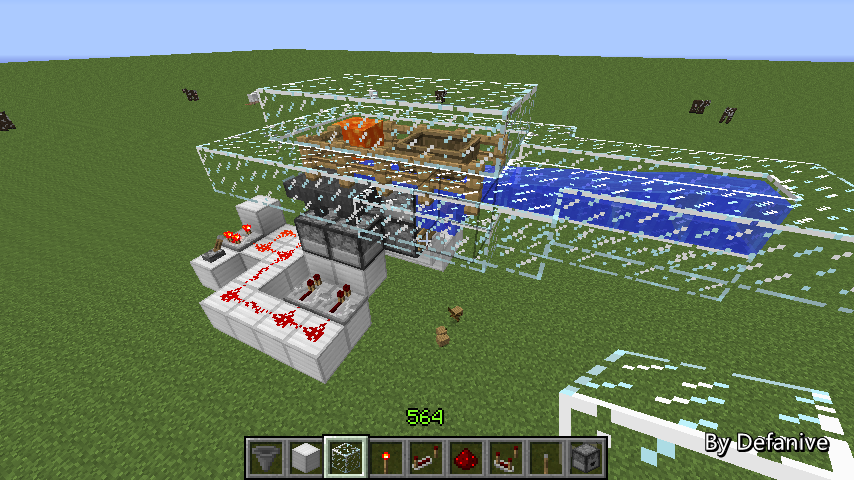

首页
上一页
225
226
227
228
229
230
230
231
232
233
234
235
下一页
末页
defanive2
无尽黑夜
14
接下来我们可以很简单的分析一下
全部的物品包括木板、木棍、船都会回到这个发射器里面
由于发射器面前有水，会把船发射出来
而木板和木棍只会抛射出来，从水槽里掉下去
因此这样就很简单的做出了船和木板、木棍的分离
同之前所说，整个机器的效率重点在于船的传输
因此木板和木棍的分离可以晚点再做
——来自 MCLive
15669楼
2013-04-13 13:31
defanive2
无尽黑夜
14
接下来只需要有一个高速脉冲电路
不断让投掷器发射物品即可
注意，这样的布线是错误的
由于投掷器是实体方块，这样会导致投掷器被强充能
而上方的漏斗就会受到信号，停止下传物品
——来自 MCLive
15670楼
2013-04-13 13:33
defanive2
无尽黑夜
14
正确的布线应该是对下面的这几个方块进行充能
这样就不会影响到上方的漏斗下传物品了
——来自 MCLive
15671楼
2013-04-13 13:34
defanive2
无尽黑夜
14
而这L型的1个发射器和2个投掷器
只需要这样就可以实现充能了
红石线给L型节点的投掷器充能
因此上方和右侧的发射器和投掷器都可以接受到信号
而且这样不会影响到漏斗下传物品
——来自 MCLive
15672楼
2013-04-13 13:36
defanive2
无尽黑夜
14
最后把这些信号连接到一个高速脉冲即可
在这里是使用的1.5的比较器脉冲
——来自 MCLive
15673楼
2013-04-13 13:38
defanive2
无尽黑夜
14
最后把上方封装好，这个封顶是必要的
之前说到了，要保证物品在被烧毁前取回
就必须要使用漏斗可以瞬间吸收1格范围内的物品的特性
因此我们要封顶防止物品跳得过高
——来自 MCLive
15674楼
2013-04-13 13:40
defanive2
无尽黑夜
14
最后我们在发射器中放入一个船
整个机器的主要部分就已经完成了！
——来自 MCLive
15675楼
2013-04-13 13:40
defanive2
无尽黑夜
14
拉下拉杆之后，高速脉冲开始运作
整个机器就开始刷木板和木棍了
——来自 MCLive
15676楼
2013-04-13 13:41
defanive2
无尽黑夜
14
船被重新回收发射出去
而木板和木棍就从下面掉落出来
整个机器最主要的部分就已经完成了
这个设计我优化了很久，虽然看起来简单
效率可以达到平均每分钟117块木板，78条木棍
折合等价于39块原木
——来自 MCLive

15678楼
2013-04-13 13:43
defanive2
无尽黑夜
14
运行十几秒钟的收获，非常丰盛
这也就是我个人认为不应该使用这个机器的原因
木材是MC里非常基础而且重要的材料
如果可以无限刷的话其实游戏平衡被破坏得非常严重
不过，没人可以阻止你使用这个机器
因此如果无限刷木材，降低游戏难度的话
这个机器是非常有价值的
——来自 MCLive
15679楼
2013-04-13 13:45
defanive2
无尽黑夜
14
接下来我们可以对这个机器增加一些附属功能
其中非常必要的自然就是储存了
以及再高级一点，分类储存
——来自 MCLive
15680楼
2013-04-13 13:48
defanive2
无尽黑夜
14
最简单的储存功能，很多人会选择直接一个漏斗放箱子
这个时候我们必须要考虑到这个机器的高效率
平均每分钟产生117+78=195个物品
那么平均每秒产生3.25个物品
而之前也说过了，漏斗处理速度非常慢，4tick一个物品
因此漏斗每秒只能处理1/0.4=2.5个物品
单个漏斗的速度是跟不上整个机器的速度的
——来自 MCLive
15681楼
2013-04-13 13:52
defanive2
无尽黑夜
14
要增加处理速度，复杂一点可以用水流回流处理
再次由于每秒3.25个物品并不算特别快
2个漏斗的速度就可以跟上机器的速度了
在这里，每4tick中，左上角的漏斗主动传输给右侧的漏斗
而下侧的漏斗主动从左上角的漏斗获取物品
因此达到了双倍处理速度，也就是每2tick可以处理1个物品
每秒可以处理5个物品，也就跟上机器的速度了
——来自 MCLive
15684楼
2013-04-13 13:56
defanive2
无尽黑夜
14
接下来如果还想把机器做得更高级
下一个可以增加的功能就是物品分类了
在介绍1.5新功能的时候就已经演示过物品分类的电路做法了
把这个电路接到输出端即可
——来自 MCLive
15685楼
2013-04-13 13:59
defanive2
无尽黑夜
14
不过在喵服的Q群里ztc提醒了我其实还有更简单的电路
这个电路其实存在已久了，在预览版时类似的电路就被某个U2B玩家设计出来了
由于年代久远比较难查，晚点再去找他名字
不过这个设计非常的精明
虽然无法对一个漏斗分离控制收取和传送
但是可以让上方的漏斗传送到无效区域，也就禁止了传送功能
让下方的漏斗实现被控传送
PS 这个电路的圈点在于延时稍大，3tick
——来自 MCLive
15686楼
2013-04-13 14:05
defanive2
无尽黑夜
14
平常的物品分类都是由水流带到各个筛选器处的
而由于这个机器只有2种物品需要分类
在此也可以拓展刚才的概念，把水流运输改成漏斗运输
好处在于漏斗运输比水流运输要快
而且如果漏处理了回传也可以保证被重新处理
最后把筛选器中的物品设置好就可以做出分类了
——来自 MCLive
15687楼
2013-04-13 14:09
defanive2
无尽黑夜
14
最后整个机器就是这样完成了
应该是目前速度最快的设计
1分钟平均下来是117木板+78木棍
PS 之所以是“平均”速度
是由于岩浆还是有非常小的几率会烧毁物品的
而在投掷器传送物品的环节，不同线路的传送距离不同
有2条线路需要传送2次，3条线路1次，1条线路0次
而物品落在哪一条线路中是完全随机的
因此速度还是有随机因素的
当然，多次计时测试平均下来就是这个结果
——来自 MCLive
15688楼
2013-04-13 14:14
defanive2
无尽黑夜
14
计时2分钟的收获，3组半=224个木板
平均1分钟112个
——来自 MCLive
15689楼
2013-04-13 14:19
defanive2
无尽黑夜
14
2分钟，2组22个=150条木棍
也就是每分钟75个
——来自 MCLive
15691楼
2013-04-13 14:20
defanive2
无尽黑夜
14
因此刚刚这2分钟的总计结果是
224木板+150木棍，等价于74.75个原木
PS 速度非常逆天
——来自 MCLive
15692楼
2013-04-13 14:21
defanive2
无尽黑夜
14
好吧今天就直播到这里了，一会去更新MCLive 1.5.0
至于1.5.0的新功能大家也都猜到了：图片水印和表情
图片水印可以自定义内容、样式、颜色、字体等等
表情支持wapp贴吧的56个标准表情
同时进行了一堆的BUG修正以及优化
总之MCLive 1.5.0是个不错的更新！
——来自 MCLive
15693楼
2013-04-13 14:30
defanive2
无尽黑夜
14
13w16a！！
1.6的第一个预览版终于出了！！
在预览版里主要是开始了马及相关物品的添加
个人对此并不是非常感冒，但是仍然是值得兴奋的
PS 个人在1.6里面最希望见到的是官方MOD API
mojang说得太诱人了，但是却拖延这么久
15759楼
2013-04-19 06:03
defanive2
无尽黑夜
14
这周到周六都不会直播，为什么呢？
因为喵服在进行UHC竞速杀龙比赛的准备了！
本赛季具体的细则还在策划当中
初定是本周末进行服务器的试跑，以及几个人一起试玩一局
最近几天单机里面开玩了几局的UHC，第一局失败了，第二局5小时左右成功屠龙
这个赛季的整个比赛会全程多组参与者全部进行录像
比赛结束后会对录像进行整理，并进行长达2个多月的分集视频播放！
总之这次活动非常值得期待！
PS 如果不知道UHC是什么的话，赛季开播之前会对UHC以及本赛季的规则进行介绍的
UHC就是Ultra Hardcore的简称，难度比Hardcore更加高的游戏模式
15765楼
2013-04-19 12:08
defanive2
无尽黑夜
14
最近学业比较忙也一时无法更新，周末应该会有时间
最近MC发生了什么事呢？今天mojang发了2个预览版
1个是1.5.2的pre-release，另外一个是1.6的预览版13w17a
152pr基本上只是BUG修复以及效率优化，没有新增元素
mojang已经把开发重点转移到1.6的开发上了
而13w17a增加了hardened clay方块（目前只有建筑用途）
小修改了世界生成器，湖不会在沙漠生成（岩浆湖仍然正常生成）
以及最坑爹的，僵尸被打时有5%的几率召唤更多僵尸
结果30只僵尸平均可以刷到50只僵尸左右，成了最简便的经验塔。。
总之1.6的这几次预览版个人都比较失望
似乎貌似没有新想法可以增加到MC里面了
PS 仍然在等待官方MOD API
15839楼
2013-04-26 12:13
defanive2
无尽黑夜
14
最近几天在给下一个工程做准备，自然也提前在创造里面试造了一下
做了一个每分钟360个石头的造石机
视频+图文发在另外一个帖子里了，欢迎围观
http://tieba.baidu.com/p/2295101243
15867楼
2013-04-28 15:48
defanive2
无尽黑夜
14
1.5更新后旧的半自动黑曜石机不再有效了
因此设计了一个使用美观的黑曜石机
欢迎围观
http://tieba.baidu.com/p/2300513436
16132楼
2013-05-01 10:08
defanive2
无尽黑夜
14
最近貌似很久没更新了。。
做了2个视频，测试一下机子，表示录制时没有那么卡了
当然今天起床这么早有什么事做呢
喵服的UHC正式比赛终于要开始了！
喝一杯咖啡，准备苦战5小时！
机子录制不卡，会全程录像的！
PS 好久没练UHC了，有点手生
希望不要太早神作。。
16174楼
2013-05-04 20:42
defanive2
无尽黑夜
14
UHC第一季在2小时前结束啦！
结果当然不能透露，不过大家都玩得很开心
每队人全程都有录像，视频会被剪辑成半小时一集，从下周开始每周六放出一集
当然一路上视频笑点都非常多
总之大家玩得开心就好了！
PS 这一季是竞速杀龙，下一季会考虑做其他类型的
16203楼
2013-05-05 05:38
defanive2
无尽黑夜
14
最近都在忙UHC的各种事情
周末做好了非常霸气的片头
今天开始制作+渲染第一集了
半小时的视频渲染要一个多小时，再加上上传也要很久
总之制作一集需要很长的时间
一个星期放一集看起来很少
不过这样才能预留足够的时间制作
同时观众也有足够的时间把每个队伍的视频都看完
总之UHC第一季发布准备得差不多了！
大家很快就可以看到这次精彩的比赛了
PS 由于这个原因直播停了一会
不过等到UHC发布了之后，直播会继续的
其实现在有好几个工程准备做的
总之直播不会停，仍然继续下去
16234楼
2013-05-07 10:21
defanive2
无尽黑夜
14
UHC一切就绪！
ztc发的UHC第一季帖子链接
http://tieba.baidu.com/p/2316311751
里面有10个竞猜问题，猜对的可以现场围观下一季的比赛哦！（说不定还能参与！）
大家都来猜猜吧！
本周五晚上（或周六凌晨）我会发出第一集
同时其它队的成员也会发出他们队的录像
敬请期待吧！
16277楼
2013-05-09 09:19
首页
上一页
225
226
227
228
229
230
230
231
232
233
234
235
下一页
末页